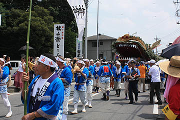

脚折雨乞/埼玉県鶴ヶ島市
埼玉県の鶴ヶ島市で4年に一度、オリンピックイヤーに開かれる祭がある
脚折雨乞（すねおりあまごい）である。
雨乞い行事なのだが、しみったれた火を焚いて天に向かって拝んだりとかそんなジジイのキレの悪い小便みたいなしょぼくれた雨乞いではないのだ。
巨大な竜蛇が街中を練り歩く超ダイナミックな雨乞祭なのである。
豪壮かつ豪快かつ豪ジャス。
街が一日限り巨大怪獣にジャックされたようなものだ。
こりゃあ空にミサイルを撃ち込む位の効き目があるに違いない。こりゃあ見に行かねば。
場所は関越自動車道鶴ヶ島ICの近く。
茶畑と住宅地と郊外型商業施設が混在する、一見どこにでもあるような場所だ。
そんな鶴ヶ島ICへの入り口でもある国道407号線、いわゆるファミレスやカーディーラーが立ち並ぶ広い道路の東西で祭りは執り行われる。
この一帯を脚折といい、国道の西側にある白髭神社がそのスタート地点だ。
開始時間少し前、神社に行ってみると、おりました。おりました。巨大な竜蛇が。
ファーストコンタクトは後ろからだった。
道の真ん中に竹がわたしてあり、その上に葉が積んであったモノが現れた。
あまりにも大きいのでまさかコレが竜蛇の尻尾とは思えず、何かの収穫物が並んでるのかと思ったほどだ。
市教で発行している冊子「脚折雨乞」によると長さ36メートル、胴回り6メートル、頭部の高さは4.5メートル、重さ3トン。
巨大な竜蛇は毎回地元の人達によって作られる。
竹の骨組みに麦藁で肉付けをし、表面は笹葉で覆う、特に頭部は念入りに作られ、口、眼、耳、それに後述するが金の擬宝珠状のモノなどが取り付けられる。
尻尾の辺りには巨大な刀が置かれていた。
聞けばこの刀も毎回作るのだそうだ。
何となく添え物っぽい刀だが、この後、この刀が大暴れすることは知る由もない…
龍の担ぎ手がスタンバった。
総勢300人いるという。若い人が中心なのでイキが良い。
ちなみにこの日の最高気温は36度。快晴。雨は一滴も降る気配ナシ。
竜蛇を正面から見る。
人など軽く一飲みしそうな大きな口。
胴体は全部笹の葉で覆われているが頭部は様々な素材を使って工夫を凝らしてある。
耳は縄を編んで丸めたもの。その後ろには紅白の棒が刺さっている。これは角なのか？
で、目は竹で編んだ骨組に銀紙を被せてある。
鼻の穴は赤いリング、歯は板で出来ており、銀紙が貼られている。
口の中は赤く塗られた竹で編んであり、そのエッジは棕櫚の葉で髭のように縁取られている。
口の中には雷電神社の札が挟んである。
雷電神社とは雷避けの神様として北関東では名高い上州板倉の神社だが、その神社の池から水を脚折の雷電池に注いだら雨が降った、という言い伝えから、現在も雷電神社から戴水し、こうして札を貼っているのだ。
この雨乞い行事の宗教的な仕掛けとしては
1神官による雨乞いの祈祷
2板倉雷電神社からの戴水
3巨大な竜蛇の引き廻し
の3つ。
そしてこれらが、混ざり合って、最後は雷電池にてクライマックスを迎えるのだが、その話は追々ということで。
さて、いよいよ出発である。
関係者の挨拶や神官の祝詞の後、どこかマーチのようなセカンドラインファンクのような不思議なリズムの太鼓が叩かれ、いよいよ巨大な竜蛇が動き出す。
最初の難関は狭い神社脇の道から大通りに出る直角カーブだ。
今や遅しとお待ちかねの市民（と私を含めたカメラおやじ）に迎えられ、その巨大な竜蛇がいよいよ静かな街をジャックし始める。
「ハイ下がって、下がってってば！下がんないと竜に轢かれるよ！」
と若いお巡りさんも発砲寸前のテンパリ具合。祭りですからねえ〜。血が騒ぎますよねえ〜。
いよいよ頭が右に振られて竜蛇が町に出現する。
胴体部分は文字通り蛇腹になっているのだろうか。
それとも竹と藁で作った部分を無理矢理ねじまげているのだろうか。
いずれにせよ道幅一杯のスペースを使わないと曲がれないようで、あちこちで「ハイ下がって〜」となっている。
うおっ！来た来た！
もちろん頭の中は伊福部センセイのゴジラのテーマがフルボリュームでリフレイン
「ゴジラ ゴジラ ゴジラとメカゴジラ…」（作詞俺）
んぎぃぃぃぃ〜〜〜〜
迫り来る竜蛇の迫力に大興奮！
今にも火を噴きそうじゃないっすか！
さて、この竜蛇の行進、数名の人達が先導している。

幟を持つ人、法螺貝を吹く人などなど。
法螺貝や鐘といった鳴り物は雨乞いには欠かせないアイテムだという。
大気を振動させて雨を降らせよう、という経験則に基づく知恵なのだろうか。出発前の太鼓も同じような意味があるのだろう。
目の前を通り過ぎていく竜蛇。
耳と耳の間にあるのが金の擬宝珠。一般的に竜にこんなモノが付いているのかどうかは定かではないが、ここの祭では竜の肝心な部分とされている。いわゆる怪獣でいうところのヤツの弱点はアソコだ！的な部分。
無事直角カーブでの引き廻しを成功させて、数時間の市内引き廻しの旅に向かう三百余人の担ぎ手の皆さん。
繰り返すがこの日の最高気温は36度。風なし雲なしの見事なまでの雨乞い日和…暑いでしょうけど頑張ってください。
出発地点に行ってみると女性のみなさんが竜蛇サマからこぼれた藁くずを掃除してました。
人目に触れるところばかりが祭じゃないんですね。ご苦労様です。
この後、竜蛇は脚折区内を廻り、数百メートル離れた雷電池に舞台を移す。
その間、あまりにも暑いのでファミレスで休憩してきます…
脚折雨乞その2へ
珍寺大道場 HOME